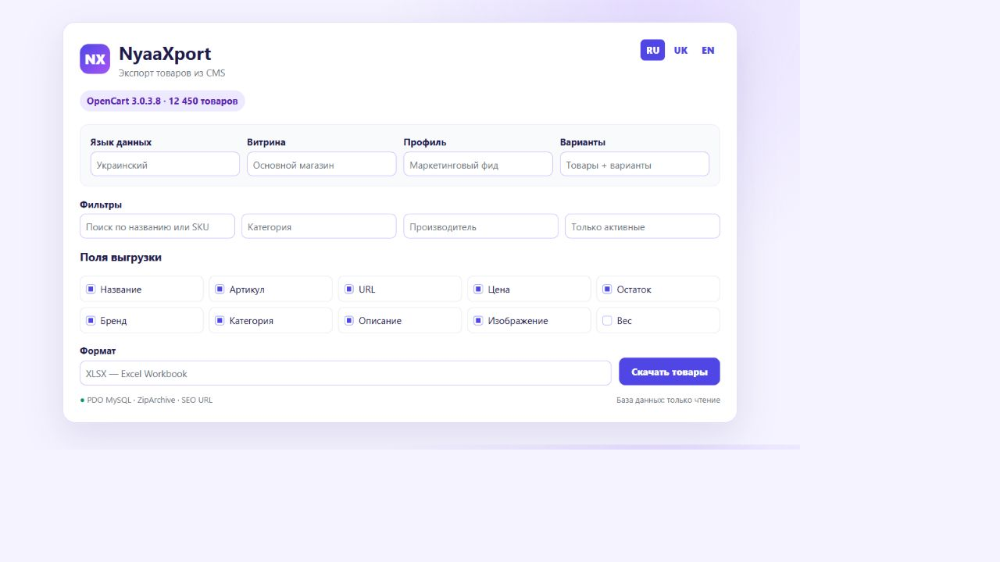
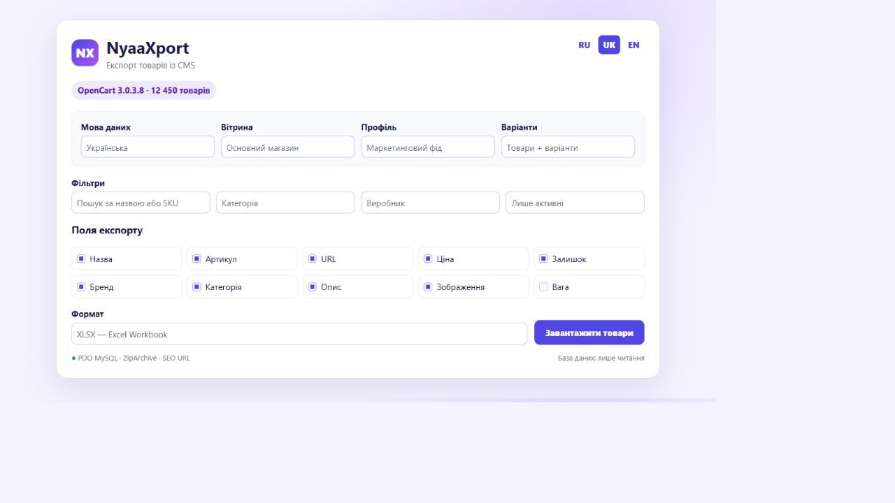
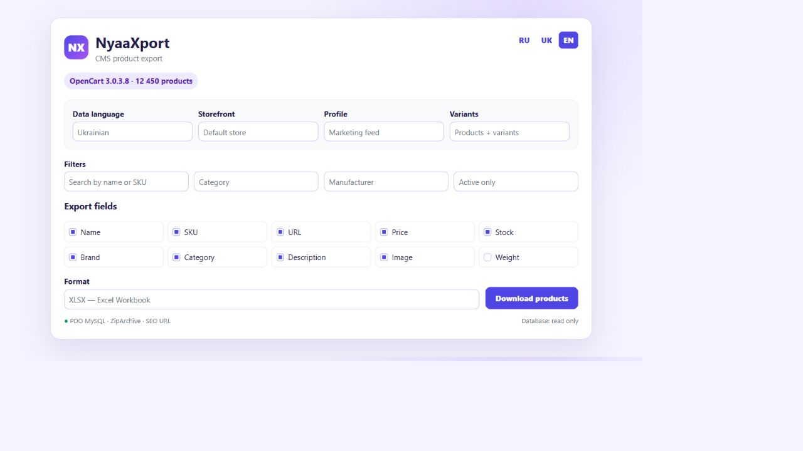

Один файл. Любой каталог.NyaaXport
Автономный экспортёр товаров для популярных CMS и облачных магазинов — без модулей, Composer и сложной настройки.
$ upload nyaaxport.php
✓ CMS detected
✓ 12,450 products
✓ SEO URLs + variants
→ CSV · XML · XLS · XLSX

Пример интерфейса NyaaXport на русском языке
Функциональность
Универсальный экспорт
Выбор полей, языков, витрин, вариантов и фильтров. Потоковая обработка больших каталогов.
Готовые форматы
CSV, XML, XLS, XLSX, Google Merchant, Meta Catalog, YML, Prom.ua и Rozetka.
Безопасность
Ключ доступа, CSRF, ограничение входов, тайм-аут сессии, IP allowlist и диагностика.
Поддерживаемые платформы
OpenCart / ocStoreWooCommercePrestaShop1C-БитриксCS-CartMagento 2Shopware 6WebasystMODX miniShop2VirtueMartHikaShopJoomShoppingSimpla / OkayCMSShopifyBigCommerceWixProm.uaHoroshop / JSON API
Требования
PHP 5.6
nyaaxport_56.php, PDO MySQL и ZipArchive для XLSX.
PHP 7–8
nyaaxport.php, PDO MySQL и ZipArchive.
Облачные API
nyaaxport_cloud.php, PHP 7–8, cURL и API-токен магазина.
Установка
Скачайте файл
Выберите сборку в последнем GitHub-релизе.
Установите ключОткройте PHP-файл в текстовом редакторе и замените значение в начале файла:
const NYAAXPORT_ACCESS_KEY = 'CHANGE-ME-NOW';
const NYAAXPORT_ACCESS_KEY = 'мой-длинный-уникальный-ключ';
// Для nyaaxport_cloud.php:
const NYAAXPORT_CLOUD_KEY = 'мой-длинный-уникальный-ключ';
Это пример — придумайте собственный ключ и не публикуйте его. Загрузите в корень
Откройте файл через HTTPS и выполните экспорт.
Удалите после работы
Не оставляйте экспортёр доступным без необходимости.
Поддержать проект
Если NyaaGuard оказался полезен, вы можете поддержать дальнейшую разработку:
| Сеть | Адрес |
|---|
| USDT — TRC20 | TR3fkALFRTDyRaHsDU8aUmANGPRDy2gU1s |
| ETH — ERC20 | 0x9d20248c779dcb742f7795a0c7461346c0c8934e |
| BTC | 1BQwypiKfhNGb1ryKzdp7TBPL4wR6ckU4J |
| PayPal | Пополнить PayPal |
Перед переводом криптовалюты обязательно проверьте выбранную сеть и адрес.
Один файл. Будь-який каталог.NyaaXport
Автономний експортер товарів для популярних CMS і хмарних магазинів — без модулів, Composer та складного налаштування.
$ upload nyaaxport.php
✓ CMS detected
✓ 12,450 products
✓ SEO URLs + variants
→ CSV · XML · XLS · XLSX

Приклад інтерфейсу NyaaXport українською мовою
Функціональність
Універсальний експорт
Вибір полів, мов, вітрин, варіантів і фільтрів. Потокова обробка великих каталогів.
Готові формати
CSV, XML, XLS, XLSX, Google Merchant, Meta Catalog, YML, Prom.ua та Rozetka.
Безпека
Ключ доступу, CSRF, обмеження входів, тайм-аут сесії, IP allowlist і діагностика.
Платформи
OpenCart / ocStoreWooCommercePrestaShop1C-БітріксCS-CartMagento 2Shopware 6WebasystMODX miniShop2Joomla shopsSimpla / OkayCMSShopifyBigCommerceWixProm.uaHoroshop
Вимоги
PHP 5.6
nyaaxport_56.php, PDO MySQL та ZipArchive.
PHP 7–8
nyaaxport.php, PDO MySQL та ZipArchive.
Хмарні API
nyaaxport_cloud.php, PHP 7–8, cURL та API-токен.
Встановлення
Завантажте файл
Оберіть збірку в останньому GitHub-релізі.
Встановіть ключВідкрийте PHP-файл у текстовому редакторі та замініть значення на початку файлу:
const NYAAXPORT_ACCESS_KEY = 'CHANGE-ME-NOW';
const NYAAXPORT_ACCESS_KEY = 'мій-довгий-унікальний-ключ';
// Для nyaaxport_cloud.php:
const NYAAXPORT_CLOUD_KEY = 'мій-довгий-унікальний-ключ';
Це приклад — створіть власний ключ і не публікуйте його. Завантажте в корінь
Відкрийте файл через HTTPS і виконайте експорт.
Видаліть після роботи
Не залишайте експортер доступним без потреби.
Підтримати проєкт
Якщо NyaaGuard став у пригоді, ви можете підтримати подальшу розробку:
| Мережа | Адреса |
|---|
| USDT — TRC20 | TR3fkALFRTDyRaHsDU8aUmANGPRDy2gU1s |
| ETH — ERC20 | 0x9d20248c779dcb742f7795a0c7461346c0c8934e |
| BTC | 1BQwypiKfhNGb1ryKzdp7TBPL4wR6ckU4J |
| PayPal | Поповнити PayPal |
Перед переказом криптовалюти обов’язково перевірте вибрану мережу та адресу.
One file. Any catalog.NyaaXport
A standalone product exporter for popular self-hosted and cloud stores — no modules, Composer, or complicated setup.
$ upload nyaaxport.php
✓ CMS detected
✓ 12,450 products
✓ SEO URLs + variants
→ CSV · XML · XLS · XLSX

NyaaXport interface example in English
Features
Universal export
Choose fields, languages, storefronts, variants, and filters. Stream large catalogs efficiently.
Ready-made formats
CSV, XML, XLS, XLSX, Google Merchant, Meta Catalog, YML, Prom.ua, and Rozetka.
Security
Access key, CSRF, login throttling, session timeout, IP allowlist, and server diagnostics.
Platforms
OpenCart / ocStoreWooCommercePrestaShop1C-BitrixCS-CartMagento 2Shopware 6WebasystMODX miniShop2Joomla shopsSimpla / OkayCMSShopifyBigCommerceWixProm.uaHoroshop
Requirements
PHP 5.6
nyaaxport_56.php, PDO MySQL, and ZipArchive.
PHP 7–8
nyaaxport.php, PDO MySQL, and ZipArchive.
Cloud APIs
nyaaxport_cloud.php, PHP 7–8, cURL, and a store API token.
Installation
Download a file
Choose the right build from the latest GitHub release.
Set an access keyOpen the PHP file in a text editor and replace the value near the top:
const NYAAXPORT_ACCESS_KEY = 'CHANGE-ME-NOW';
const NYAAXPORT_ACCESS_KEY = 'my-long-unique-access-key';
// For nyaaxport_cloud.php:
const NYAAXPORT_CLOUD_KEY = 'my-long-unique-access-key';
This is an example. Create your own key and never publish it. Upload to the root
Open the file over HTTPS and run the export.
Remove it afterward
Do not leave the exporter publicly accessible when it is not needed.
Support the project
If NyaaGuard has been useful, you can support further development:
| Network | Address |
|---|
| USDT — TRC20 | TR3fkALFRTDyRaHsDU8aUmANGPRDy2gU1s |
| ETH — ERC20 | 0x9d20248c779dcb742f7795a0c7461346c0c8934e |
| BTC | 1BQwypiKfhNGb1ryKzdp7TBPL4wR6ckU4J |
| PayPal | Fund via PayPal |
Always verify the selected cryptocurrency network and address before sending funds.